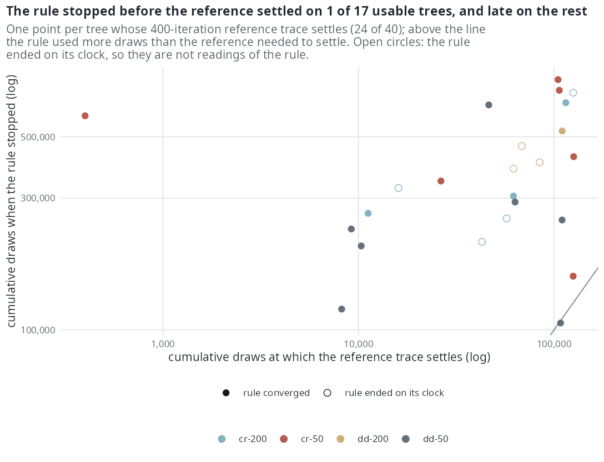

E9 — Does the mc_error stopping rule stop where the estimate has settled?
| Status | complete; the dd 200-tip rule arm is clock-limited (9 of 10 fits on the clock); holds for cr and dd, the two models it measured |
| Package build | first shard library e8, installed at 4f42b27 on 2026-09-20; the build audit found that library identical to a clean build except ned on the thinning proposal; second shard library cur, installed at 373eec1 on 2026-09-24; the build audit puts that host's libraries at 373eec1 … f0dff93, identical to clean builds |
| Driver / analysis | sim/E9-stopping-rule.R |
| Data | results/E9/stopping-rule.csv (40 rows), results/E9/traces/ (the 40 reference and rule traces), results/E9/design.rds |
Question
stop_rule = "mc_error" (Booth & Hobert 1999; Caffo et al. 2005) splits each E-step's draws into five batches, re-runs the M-step on each, measures the parameter step in units of the batch standard error, grows the draws by 1.5 while the step is inside the noise, and stops once the draws have reached their cap (8 times the initial number) and the step has stayed inside the noise for three iterations, returning the mean of the last three iterates. Nothing had checked that this is where the estimate has settled. It mattered because the cr arm of S stopped its larger fits on time_budget (30 of 60 at 800 tips), so what the rule would have done there was unknown.
Design
Two arms per tree, both real runs.
| parameter | value | meaning |
|---|---|---|
| cells | cr and dd at n ∈ {50, 200} tips |
4 cells |
| trees | 10 per cell | 40 |
| generating rates | \(\beta\)0 = 0.5, turnover 0.25 (\(\gamma\)0 = 0.125), crown age 15; dd capacity calibrated to the target size |
|
| proposal, link, \(\rho\) | surrogate, linear, 1 | |
| rule arm | mc_error as shipped, 200 initial draws, max_iter 400 so that the rule and not the cap stops it; driver default clock 4 x 7200 s |
|
| reference arm | rel_change with tol = 0 (never satisfied), 400 iterations at a fixed draw count; the driver default is 2000 draws, the traces carry 400 draws per iteration (ref_draws_total = 160 400) |
the trajectory the rule is judged against |
| comparison axis | cumulative E-step draws | the two arms consume draws at different rates |
| settled estimate | mean of the last 50 reference iterations; its Monte Carlo error their standard error | |
| settling point | the first iteration from which the running mean to the end stays inside that error for every fitted parameter | only the slots the model fits are read |
Pre-set rule
Readout, no threshold: where the rule stops against where the estimate settles, both in cumulative draws; the parameter error at the stop in units of the reference's Monte Carlo error; and whether the rule ever stops while the last few steps still share a sign, which noise does not produce.
Results
The rule arm ended converged on 10 of 10 (cr 50), 5 of 10 (cr 200), 10 of 10 (dd 50) and 1 of 10 (dd 200; 9 on the clock). The reference trace has a settling point on 24 of 40 trees; 16 of 40 do not settle inside 400 iterations. Trees where both can be read (settle point found and rule converged): 17 — cr 200: 3, cr 50: 6, dd 200: 1, dd 50: 7.
| on the 17 usable trees | value |
|---|---|
| rule stopped before the settle point | 1 (dd 50, tree 4: 105 944 against 107 993 draws) |
| rule stopped while the last steps shared a sign | 0 |
| median |\(\hat{\theta}\)_rule - \(\hat{\theta}\)_ref| | 0.0076 on parameters of 0.3-0.5 (about 2%) |
| median rule draws to stop / reference draws to settle | 6.9 (criterion-bound, see below) |
| rule draws per fit, median over all 40 | 409 000 (127 iterations), against the reference's 160 400 |
The stricter flag (settled within the band on every parameter) holds on 8 of 40 trees; on those, the median maximum error is 0.48 reference standard errors.

dd 50, tree 4, at 0.98 of the reference's draws.The adversarial review of E5-E14 struck two derived numbers: the 6.9x multiplier and an "outside the band in 14 of 17" count both depend on the running-mean settling criterion, which E13 showed can fire mid-transient, and on a band equal to one iterate's scatter. Against a plateau criterion there is mostly no settle point at all (0 to 2 of 10 per cell). Neither number is reported as a result.
Conclusion
Under the readout: the rule does not stop early — it never stopped while the trace was still moving systematically (0 of 17) and stopped before the settle point on 1 of 17, by 2% of the draws. It stops late, and its estimate lands about 0.008 (about 2%, one iterate's noise per E13) from where a 400-iteration reference lands. How late is criterion-bound and not stated as a number. Size dependence is not measured: only 4 of the 17 usable trees are at 200 tips, and at dd 200 the rule arm ended on its clock on 9 of 10 trees, so the rule's behaviour there is mostly unobserved. The rule is not the package default (rel_change, relative step below 10\(^{-2}\) on three consecutive iterations), and of the study's drivers only S and E9 use mc_error.